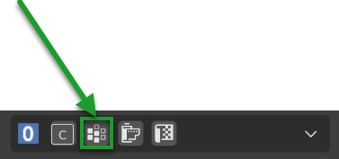

Displacement
In order to access the displacement panel, you need to activate the displace from the Main Panel at the section Displace On/Off. Only then you will be able to see the displacement panel.
Make sure you have selected the material that has the active displacement from the Material List Section otherwise you will not see the displacement panel.
{kind=link}
Note
Some materials, for example Car Paint or Water once applied you will not see the Displacement button. This is intended, as these materials do not need displacement. The button will be visible, only if in the material there is a Bump or Displacement map.
Once the displacement is activated, the button will appear to access the Popover panel (Make sure you update Extreme PBR to the latest version to have this feature)
{kind=link}
Displace Type
This selector allows you to switch from one type of displacement to another, in this way you can choose which type of displacement to use. The displacement can be used in two ways Displacement Modifier Explained: or Displacement Microdisplacement
{kind=link}
Displacement Modifier Explained
It works in Eevee and Cycles mode, in fact it uses the Blender Modifiers to create the displacement, this is very useful if you do not want to use Cycles, but also if you use Cycles, the displacement will work anyway.
Here’s what it does exactly once you activate the displacement from the button in the Displace On/Off:
As you can see, the displacement button, has activated 3 Modifiers:
- Subdivision Surface
This modifier is used to subdivide the mesh, in order to have more geometry to displace.
The subdivision surface modifier will always be 2 regardless of how many materials with displacement are present in the object, and will always be at the beginning of the modifier list.
- Displace
This modifier is used to displace the mesh, it uses the displacement map that you have set in the material. Is based on a texture, the texture is the one that will displace the mesh.
- Smooth
This modifier is used to smooth the mesh, in order to have a less angular mesh.
The smooth modifier will always be 1 regardless of how many materials with displacement are present in the object, and will always be at the end of the modifier list.
{kind=link}
The displacement button also activates a texture slot, where the image texture that will be used for displacement will be placed.
{kind=link}
Displacement (Modifier)
Note
Per utilizzare piu displacement modifier su un oggetto, fare riferimento a questo paragrafo: Multiple Displacement Modifier
Here is how the displacement panel looks like once you activate the Displacement button. By default it will be set to Modifiers
{kind=link}
Toggle Wireframe
{kind=link}
This button allows you to control the mesh of the selected model, it also allows you to see all the subdivisions that have been applied to the model by the modifier
{kind=link}
Subdivision Type
{kind=link}
The subdivision algorithm that will be used to subdivide the mesh will change the result very much depending on some situations. Le opzioni disponibili sono Simple Subdivision, Catmull-Clark Subdivision
Catmull-Clark Subdivision
In this example Edit Mode we have a cube not subdivided manually (six faces of the cube) with Catmull-Clark algorithm
{kind=link}
Here is the result of the displacement in Object Mode with Catmull-Clark algorithm not subdivided manually (six faces of the cube)
{kind=link}
In this example Edit Mode we have a cube subdivided manually (six faces of the cube subdivided into 4 faces each) with Catmull-Clark algorithm
{kind=link}
Here is the result of the displacement in Object Mode with Catmull-Clark algorithm subdivided manually (six faces of the cube subdivided into 4 faces each)
{kind=link}
Simple Subdivision
This type of subdivision is the default one, and usually it is the most used.
The cube in this case is not subdivided manually (six faces of the cube) with Simple algorithm
{kind=link}
Viewport/Render Subdivision
{kind=link}
These two properties decide how many subdivisions you want to apply to the model, this makes the model richer in details, but it has a cost not cheap, as the higher the number of subdivisions the heavier and slower the model will be.
By default the parameters can be set between 1 and 6 with the mouse, but can be forced to a higher subdivision manually entering the desired number.
Warning
Be careful to use too high subdivision numbers, as blender could lock up for a long time or even block altogether. This is a problem that has been known for years in the Subdivision Surface modifier of Blender.
- Viewport Subdivision
This regulates the subdivision of the model in the viewport, that is when you are working on the model, so you can think to set a low value, to have a lighter and faster model to edit. It will not affect the final render.
- Render Subdivision
This regulates the subdivision of the model in the final render, that is when you render the model, so you can think to set a high value, to have a model richer in details. It will not affect the viewport. You will see the result only when the render is completed. (F12 to render)
Displace Strength
{kind=link}
This property regulates the strength of the displacement, that is how strong the displacement will be. It can also be negative, in fact if you want to create a carving effect, you have to set a negative value.
Here is an example that includes some situations:
Displacement Negative -0.1
Displacement Positive 0.25
Displacement Positive 0.1
{kind=link}
Displace Midlevel

The midlevel is used to adjust the position of the displacement, so that it can be moved up or down. you can say that it is an offset of the displacement.
Smooth Factor
{kind=link}
The smooth factor is used to smooth the displacement, in order to have a less angular mesh. The higher the value, the more the mesh will be smoothed. This value work in conjunction with the Smooth Repeat value.
Smooth Repeat
{kind=link}
The smooth repeat is used to repeat the smooth, in order to have a less angular mesh. The higher the value, the more the mesh will be smoothed in large areas.
This value work in conjunction with the Smooth Factor value.
Brightness
{kind=link}
This value regulates the brightness of the displacement texture, so that it can be made brighter or darker. In fact, the displacement works according to the White / Black map, so if the map is too dark, the displacement will not be seen, or you will see little, so this value is very useful for adjusting the brightness of the map.
Note
All the displacement maps of the Extreme PBR library have been optimized to have a value of brightness as correct as possible, but there are some cases where it is necessary to adjust this value, especially if you are importing a displacement map.
Contrast
{kind=link}
This value regulates the contrast of the displacement texture, so that it can be made more contrasted or less contrasted. In fact, the displacement works according to the White / Black map, so if the map is too contrasted, the displacement will be too strong, or you will see little, so this value is very useful for adjusting the contrast of the map.
Note
All the displacement maps of the Extreme PBR library have been optimized to have a value of contrast as correct as possible, but there are some cases where it is necessary to adjust this value, especially if you are importing a displacement map.
Bake Displacement
{kind=link}
This button is the equivalent of the Apply buttons present in the Blender modifiers, so what it will do is apply all the modifiers of the displacement mentioned in this paragraph: Displacement Modifier Explained and make them permanent.
This operation makes the displacement definitive and no longer adjustable, so if you want to go back the only way is do an Undo (CTRL + Z). The mesh will become heavier and will have the shape given by the modifiers.
Displacement Microdisplacement
The microdisplacement differs from that with modifiers. In fact, it uses the Cycles render engine
{kind=link}
The settings in the panel in Microdisplacement mode are the same as those in Modifiers mode:
- Catmull-Clark
Here the reference: Catmull-Clark Subdivision
- Simple
Here the reference: Simple Subdivision
- Viewport Subdivision
Here the reference: Viewport Subdivision
- Render Subdivision
Here the reference: Render Subdivision
- Adaptive Subdivision
Activates the adaptive subdivision, automatically sets the “Experimental Features” of cycles.
Important
Make sure you are in Cycles mode and Render Preview otherwise the microdisplacement will not work. Microdisplacement is only available in Cycles mode, and it is not available in Eevee mode.
{kind=link}
Note
In order to use more microdisplacement on an object, refer to this paragraph: Multiple Microdisplacement
How to adjust the Microdisplacement
In order to adjust the Microdisplacement, unlike the Displacement with Modifiers, you use the Material Editor panel
Nexus Mode
In the Nexus mode Material Type, accessing the Material Editor panel Material Nexus type you can adjust the intensity of the Microdisplacement through the Bump and Bump Distance parameters present in the panel. Make sure you have selected the material that has the active Microdisplacement from the Material List Section otherwise you will not see the corresponding Material Editor panel for the selected material.
{kind=link}
Simple PBR Mode
In Simple PBR mode, Material Nexus type, accessing the Material Editor panel Material Editor (Simple PBR) you can adjust the intensity of the Microdisplacement using the Displacement MidLevel and Displacement Scale parameters present in the panel. Make sure you have selected the material that has the active Microdisplacement from the Material List Section otherwise you will not
{kind=link}
Multiple Displacement Modifier
So if you have followed the previous paragraphs, you may already have the opportunity to have understood how the displacement works, but it may be unclear how to use for example 2 materials with 2 different displacements on the same object.
In this case it is simple, just add the second material to the faces of the model you want, turn on the displacement Displace On/Off and then press the button Smart Vertex Groups to separate the vertex groups of the two materials.
Make sure you have selected the material that has the active displacement from the Material List Section otherwise you will not
{kind=link}
See also
Here is well explained here: Smart Vertex Groups
Note
Every time you make a change to the mesh (Add or delete faces), you will have to press the button again to update the vertex group, as if there are new ones, or you have removed old faces, the vertex group will no longer be updated.
Multiple Microdisplacement
The multiple microdisplacement is managed by the Material Editor panel, you will not have to use any buttons to separate the vertex groups, but remember that the microdisplocement only works in Cycles mode, so make sure you are in Cycles mode and Render Preview. The displacement effects are managed by the Material Editor panel How to adjust the Microdisplacement
Displace Offset (Warning Button)
This button will be shown if you are working in displacement mode with modifiers in case one of the properties of the procedural mapping of the texture will be manipulated deviating from its default values. This warns us that the material mapping is not in line with the mapping of the modifier as it has deviated from the values of the uv map, so to avoid display problems, in fact, this button will come to the rescue, which once pressed, will bring the texture mapping in line with the uv mapping, returning the default values.
Note
You can scale your texture together with the displacement modifier, through the Texture Manager panel explained in this section: Texture Manager Panel